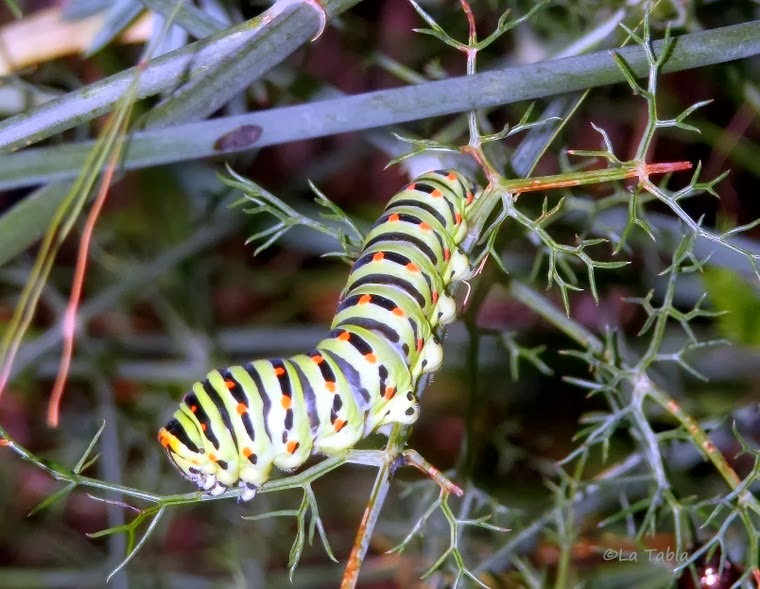

Here you will find som random data about these precious butterflies and also a great amount of images to help you identify them.

This is what it looks like when it is still a caterpillar

CURIOSITIES
Papilio machaon was named by Carl Linnaeus in the 10th edition of Systema Naturae in 1758
The butterfly has a strong and fast flight, but frequently pauses to hover over flowering herbs and sip nectar.
Back home